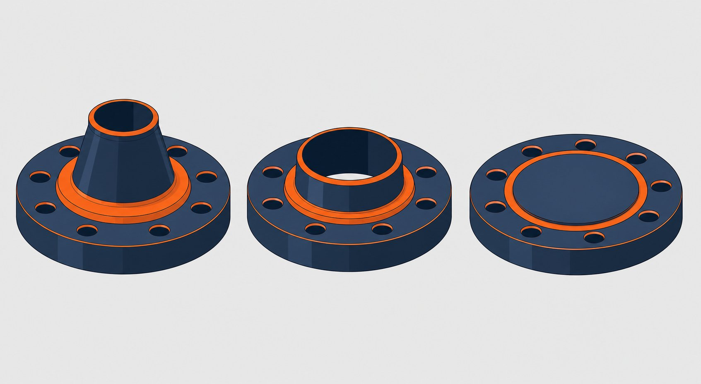

دامنه کاربرد استاندارد فلنجهای جوشی
استاندارد فلنج و اتصالات فلنجی، ابعاد، تلرانسها، متریالها و جداول فشار-دما را برای فلنجها و اتصالات فلنجی از نیم اینچ تا ۲۴ اینچ پوشش میدهد. این استاندارد با عنوان ASME B16.5 شناخته میشود. کلاسهای فشاری شامل ۱۵۰، ۳۰۰، ۴۰۰، ۶۰۰، ۹۰۰، ۱۵۰۰ و ۲۵۰۰ است. برای فلنجهای بزرگتر از ۲۴ اینچ باید به ASME B16.47 مراجعه کرد.

انواع فلنج و کاربرد هرکدام
| نوع | ویژگی اصلی | کاربرد معمول |
|---|---|---|
| گلودار (WN) | گلوی مخروطی با استحکام بالا | سرویسهای پرفشار، دماهای بالا و سیکلهای حرارتی |
| اسلیپآن (SO) | سوار شدن روی لوله و دو جوش | خطوط عمومی با فشار متوسط؛ نصب آسان |
| کور (Blind) | بدون سوراخ مرکزی | بستن انتهای خط، هدرها و نقطه کور بازرسی |
| ساکتولد (SW) | کاسه جوشی برای لوله کوچک | خطوط ابزار دقیق و سایزهای کوچک پرفشار |
| رزوهای (TH) | بدون جوشکاری | سرویسهای غیرحساس و هوای فشرده |
| اورلپ (LJ) | همراه با استاباند | سرویسهای نیازمند دمونتاژ مکرر و متریالهای خاص |
انتخاب نوع فلنج به فشار، دما، سیکل کاری و ملاحظات نصب بستگی دارد.
سطوح آببندی
سطح تماس فلنج با گسکت تعیینکننده عملکرد آببندی است:
- سطح برجسته: رایجترین سطح؛ با گسکتهای نیمهفلزی و غیرفلزی استفاده میشود.
- سطح تخت: معمولاً در اتصال به تجهیزات چدنی یا کلاسهای پایین؛ نباید با فلنج برجسته جفت شود.
- رینگجوی: شیار تراکم رینگ فلزی؛ استاندارد برای کلاسهای ۹۰۰ به بالا و سرویسهای حساس.
- نر و ماده و شیار-زبانه: برای موقعیتدهی دقیق گسکت و سرویسهای خاص.
جداول فشار-دما و گروههای متریالی
فشار مجاز هر فلنج تابع جنس و دمای کاری است. استاندارد، متریالها را در گروههای فشار-دما طبقهبندی کرده و برای هر گروه جدول جداگانه ارائه میدهد. برای مثال فشار مجاز یک فلنج کربنی در دمای محیط با همان کلاس در دمای ۴۰۰ درجه متفاوت است. بنابراین ذکر «کلاس فشار» بدون دمای کاری، اطلاعات کاملی برای انتخاب نیست.
- فلنجهای کربنی رایج از فورج کربنی (ASTM A105) ساخته میشوند.
- فلنجهای دمای پایین از فورج (ASTM A350 LF2) ساخته میشوند.
- فلنجهای استنلس معمولاً از فورجهای استنلس (ASTM A182 F304/F316) تأمین میشوند.
پیچ و مهره و گسکت
اتصال فلنجی یک سیستم سهجزئی است: فلنج، گسکت و پیچ و مهره. برای فلنجهای کربنی معمولاً پیچهای آلیاژی گروه بی-هفت با مهره سنگین گروه دو-اچ استفاده میشود. تعداد و قطر پیچها برای هر سایز و کلاس در جداول ابعادی آمده است. انتخاب گسکت باید با سطح آببندی، دما و سیال سازگار باشد؛ در سرویسهای حساس، گسکت مارپیچ (Spiral Wound) با رینگ داخلی رایج است.
چکلیست استعلام خرید فلنج
- سایز اسمی و ضخامت لوله همبند (برای تطابق گلو یا کاسه).
- کلاس فشاری و دمای طراحی سرویس.
- نوع فلنج و سطح آببندی.
- متریال و شماره گروه فشار-دما؛ درخواست گواهی مواد نوع ۳٫۱.
- نیاز به گسکت و پیچ و مهره همراه.
- پوشش سطحی و حفاظت حمل (درپوش و پالت).
جمعبندی
در خرید فلنج، کلاس فشاری تنها نیمی از اطلاعات است؛ نیم دیگر، متریال و دمای کاری است. با ارائه مشخصات کامل و درخواست گواهی مواد، ریسک رد شدن در بازرسی و توقف پروژه به حداقل میرسد.
سوالات رایج
آیا کلاس ۱۵۰ معادل ۱۵۰ پیاسآی فشار کاری است؟
خیر. عدد کلاس یک شاخص اسمی است و فشار مجاز واقعی به متریال و دما بستگی دارد؛ برای مثال یک فلنج کربنی کلاس ۱۵۰ در دمای محیط حدود ۱۹ بار تحمل میکند اما در دمای بالا این مقدار کاهش مییابد. مرجع نهایی جداول فشار-دما است.
برای سرویس فشار بالا چه سطح آببندیای لازم است؟
در کلاس ۹۰۰ به بالا معمولاً سطح رینگجوی (RTJ) با رینگ فلزی استفاده میشود؛ در کلاسهای پایینتر سطح برجسته (RF) با گسکت مناسب رایجترین انتخاب است.
جنس پیچ و مهره فلنجهای کربنی چیست؟
برای فلنجهای کربنی معمولاً پیچ آلیاژی (مطابق استانداردهای پیچومهره آلیاژی) با مهره سنگین استفاده میشود؛ در سرویس دمای پایین یا خورنده باید جنس پیچ با متریال فلنج و شرایط سرویس هماهنگ باشد.
برای سایزهای بزرگتر از ۲۴ اینچ چه استانداردی حاکم است؟
فلنجهای بزرگتر از ۲۴ اینچ تحت پوشش ASME B16.47 قرار میگیرند که دو سری ای و بی دارد و کلاسهای فشاری مشابه را پوشش میدهد.
مطالب مرتبط
- مقایسه فلنج گلودار و اسلیپآن
- راهنمای جنس و متریال فلنج صنعتی
- فلنج جوشی ساکت یا رزوهای — کدام مناسب است؟
- فورج کربن استیل؛ مشخصات و نکات خرید
- راهنمای انواع گسکت صنعتی
در استعلام فلنج، سایز، کلاس فشاری، نوع فلنج، سطح آببندی، متریال و استاندارد ساخت را مشخص کنید. اگر گسکت و پیچ و مهره هم مورد نیاز است، در درخواست ذکر کنید تا بهصورت مجموعه عرضه شود.
مشاهده صفحه محصول ← ثبت RFQ همین محصولتامین این تجهیزات را به پیشرو تجهیز فرتاک بسپارید
شرکت پیشرو تجهیز فرتاک تامینکننده تخصصی تجهیزات صنعتی برای پروژههای نفت، گاز، پتروشیمی، فولاد و نیروگاهی است. برای دریافت پیشنهاد فنی و قیمت، استعلام (RFQ) خود را ثبت کنید تا کارشناسان مهندسی فروش در کوتاهترین زمان پاسخ دهند.
- تامین فلنج و اتصالاتتامینکننده فلنج کربنی، آلیاژی و استنلس با گواهی مواد
- تامین تجهیزات پایپینگلوله، فلنج، اتصالات و شیرآلات مطابق مدارک پروژه